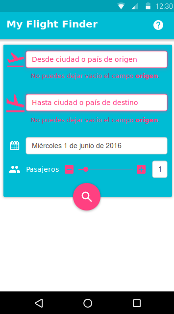
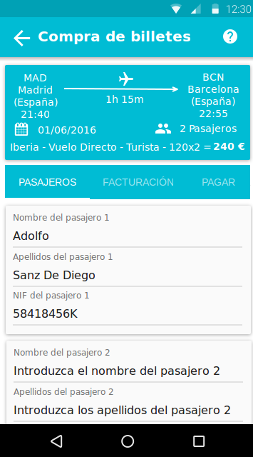

prototipado-buscar-y-coprar-billetes-de-avion-solucion.ep
Inicio
Me he decantado por un diseño "Mobile First", puesto que actualmente más de la mitad de las visitas web provienen de teléfonos móviles.
Aunque solo he desarrollado la parte móvil (habría que haber hecho el diseño para tablets y para ordenadores de sobremesa, pero se excedería del número de horas de trabajo), el diseño es responsive para adaptar la web a distintos dispositivos y tamaños de pantalla.
Además me he decantado por un diseño Android, pues siendo un buscador de vuelos baratos, la mayor parte de esas visitas móviles provienen de teléfonos Android.
Además me he decantado por el diseño Material de Google usando los colores e iconos de dicha especificación, pues es diseño con el que vienen por defecto atualmente los Android.
He usado blanco y gris oscuro para las letras. Luego un color azul de la paleta de Material Design como color principal. Un color destacado complementario (en este caso una especie de rosa también escogido de la paleta de Material Design) Y para los listado un azul con el mismo tono pero más claro que el azul principal (también escogido de la paleta de Material Design)
He diferenciado con un color de contraste (rosa) los botones con las acciones importantes.
He mantenido un contraste alto entre el fondo y el texto.
He reducido la complejidad de las páginas.
He concentrado el contenido en pocas secciones e intentado que cada una ocupe una página.
He eliminado todo lo que no sea estrictamente necesario.
He usado iconos descriptivos y ampliamente usados en el mundo web.
Los placeholder están correctamente puestos y son descriptivos.
En todas las páginas hay un icono arriba a la derecha que al pinchar desplega un mesaje de ayuda dependiendo de la página en donde esté el usuario. (Nota, para simplificar el diseño del prototipo, no he pintado los mensajes de ayuda de todas las páginas, pues me duplicaba el número de páginas)
En la parte superior de todas las páginas hay un mensaje indicando al usuario donde está situado. En este caso, como es la pantalla principal aparece el nombre de la sitio web.
Fecha por defecto una semana después de la fecha actual (pues para las primeras búsquedas de los pasajeros les da igual la fecha, y justo los vuelos de dentro de una semana son los más barátos)

Inicio-Error
Cuando el usuario comete un error en algún imput este, antes de dar al siguiente botón, se actualiza por AJAX, y se pone en rojo mostrando el error al lado.
Los datos siempre se van guardando por AJAX, de tal forma que cuando el usuario vuelve a alguna página, esos datos están guardados.
Esta página es de ejemplo para ver como se le muestran los errores al usuario.

Inicio-Ayuda
En todas las páginas hay un icono arriba a la derecha que al pinchar desplega un mesaje de ayuda dependiendo de la página en donde esté el usuario. (Nota, para simplificar el diseño del prototipo, no he pintado los mensajes de ayuda de todas las páginas, pues me duplicaba el número de páginas)
En la ventana que se desplega, aparece también un buscador para buscar en toda la sección de FAQ y los datos de contacto del servicio de atención al cliente.
En cuanto el usuario pulse fuera del recuadro de ayuda, este cuadro desaparece.

Inicio-Origen
En esta página, al usuario, según va escribiendo el origen del vuelo, le van apareciendo los resultados filtrados en un menú desplegable en donde puede seleccionar de forma sencilla.
El icono de origen (que es un avión despegando) en este caso aparece en negro para hacerlo resaltar del resto de los iconos e indicar al usuario en donde se encuentra.

Inicio-Destino
En esta página, al usuario, según va escribiendo el destino del vuelo, le van apareciendo los resultados filtrados en un menú desplegable en donde puede seleccionar de forma sencilla.
El icono de destino (que es un avión aterrizando) en este caso aparece en negro para hacerlo resaltar del resto de los iconos e indicar al usuario en donde se encuentra.

Inicio-Fecha
En esta página, cuando el foco se sitúa en la celda de la fecha aparece un menú desplegable con un calendario en donde puede seleccionar la fecha de forma sencilla.
La fecha por defecto es una semana después de la fecha actual (pues para las primeras búsquedas de los pasajeros les da igual la fecha, y justo los vuelos de dentro de una semana son los más baratos)
El icono de fecha en este caso aparece en negro para hacerlo resaltar del resto de los iconos e indicar al usuario en donde se encuentra.

Inicio-Pasajeros
En esta página, el usuario para modificar el número de pasajeros puede:
- pulsar el botón 'menos' [-] para reducir el número.
- pulsar el botón 'más' [+] para aumentar el número.
- mover el 'slider' a la izquierda para reducir el número y a la derecha para aumentar el número.
- introducir directamente el número poniendo el foco en la celda del número de pasajeros.
cuando el foco se sitúa en la celda de la fecha aparece un menú desplegable con un calendario en donde puede seleccionar la fecha de forma sencilla.
El icono de número de pasajeros en este caso aparece en negro para hacerlo resaltar del resto de los iconos e indicar al usuario en donde se encuentra.

Resultados
Desde la 'flecha' superior izquierda el usuario va a la página anterior, osea al buscador con los datos rellenos (no hay que obligar al usuario a volver a meter los datos de nuevo)
Si pincha en el icono del 'colador' el usuario puede acceder a las distintas opciones de filtrado. Estas opciones se quedarán guardadas de una búsqueda a otra.
Desde el panel principal, el usuario podrá, pinchando en el origen, el destino, la fecha, o el número de pasajeros, ir de nuevo al buscador, dejando el foco en el elemento seleccionado (origen, el destino, la fecha, o el número de pasajeros)
Abajo en un color más claro (cogido de la paleta de colores de Material Design) aparece un listado con la siguiente información:
- hora de salida
- hora de llegada
- duración del trallecto
- compañía
- si el vuelo es directo o tiene escalas
- si es clase turista o clase business
- el precio del billete
- un icono del carrito de la compra en el rosa (color "accent" lo llama Google)
El usuario puede navegar por los distintos vuelos subiendo y bajando el listado.
Si pulsa sobre uno de ellos va a la siguiente página.

Resultados-Filtro
Cuando el usuario pulsa el icono del 'embudo' el usuario accede a las distintas opciones de filtrado.
Estas opciones son:
- Fitrar por los horarios de los vuelos:
- Mostrar horarios de mañana [si/no]
- Mostrar horarios de tarde [si/no]
- Mostrar horarios de noche [si/no]
- Mostrar horarios de tarde [si/no]
- Mostrar horarios de noche [si/no]
- Fitrar por el tipo de billete:
- Mostrar vuelos con escala [si/no]
- Mostrar vuelos clase turista [si/no]
- Mostrar vuelos clase business [si/no]
- Y luego elegir una de las 4 opciones de ordenamiento:- Mostrar vuelos clase turista [si/no]
- Mostrar vuelos clase business [si/no]
- Por hora de salida.
- Por hora de llegada.
- Por precio del billete.
- Por aerolinea.
En cuanto el usuario pulse fuera del recuadro de filtros, este cuadro desaparece.

Compra-Pasajeros
Una vez que el usuario ha seleccionado el vuelo, automáticamente aparece el precio total (que es igual al precio del billete multiplicado por el número de pasajeros)
También aparecerá el resto de opciones de ese billete:
- origen
- destino
- fecha
- número de pasajeros
- hora de salida
- hora de llegada
- duración del trayecto
- compañia
- si es vuelo directo o con escalas
- tipo de billete (clase turista o business)
Abajo le aparecen unas pestañas, pero solo podrá pulsar en las pestañas ya vistas, a las otras pestañas solo podrá acceder cuando pulse el botón correspondiente.
Si el usuario pulsa la pestaña "facturación" o "pagar" le aparecerá un mensaje de error indicando que "Debe introducir primero los pasajeros antes de poder entrar los datos de facturación"
Los pasajeros aparecerán en un listado, por lo que el usuario podrá navegar por ellos subiendo y bajando.

Compra-Pasajero1
El usuario rellena los datos del primer pasajero y una vez rellenos desliza el listado hacia abajo para poder rellenar el siguiente pasajero.
También podrá ir saltando a los siguientes campos con el tabulador.

Compra-Pasajero2
Una vez rellenos los datos de todos los pasajeros aparecerá el botón de siguiente.
Si el usuario no pone los datos de los pasajeros, o introduce mal algún dato (por ejemplo la letra del NIF), el sistema marcará esa celda en rojo indicando el motivo del error.
Si el usuario pulsa en el botón anterior irá a la página de los resultados de la búsqueda.
Si pulsa en el botón siguiente irá a la sección de facturación.

Compra-Facturacion1
Por defecto aparecerán los datos del usuario (si este está logueado) o en su defecto los datos del pasajero 1, pero el sistema permitirá editarlo de todos modos.
El usuario puede delizarse hacia abajo para terminar de rellenar el formulario.
También podrá ir saltando a los siguientes campos con el tabulador.

Compra-Facturacion2
Una vez rellenos los datos de facturación aparecerá el botón de siguiente.
Si el usuario no pone los datos de facturación, o introduce mal algún dato (por ejemplo un mail o un teléfono mal formado), el sistema marcará esa celda en rojo indicando el motivo del error.
Si el usuario pulsa en el botón anterior irá a la página de pasajeros.
Si pulsa en el botón siguiente irá a la sección de pagos.

Compra-Pagar
El usuario aquí introduce los datos de pago.
El sistema no dejará meter otra cosa que no sea números y comprobará la longitud:
- 16 dígitos el número de tarjeta
- 2
dígitos el mes, y se le indica al usuario el formato (MM)
- 2
dígitos el año, y se le indica al usuario el formato (AA)
- 4
dígitos el código de seguridad.
Una vez rellenos los datos de pago aparecerá el botón de siguiente.
Si el usuario pulsa en el botón anterior irá a la página de facturación.
Si pulsa en el botón siguiente irá a la confirmación de compra.

Compra-Pagar-Ayuda
He querido visualizar la ayuda de esta página pues en ella se describe bien como indicar al usuario donde está el código de seguridad de su tarjeta de crédito/débito.
En cuanto el usuario pulse fuera del recuadro de ayuda, este cuadro desaparece.

Confirmación-Compra
En esta página aparece un resumen con todos los datos.
El usuario siempre puede pulsar en el botón anterior o en la flecha superior izquierda para volver a la pantalla anterior.
Abajo a la derecha aparece el botón comprar que es el que efectúa realmente la compra.
Cuando el usuario pulsa sobre este último botón se realiza la compra y aparece el resumen de compra con el localizador (pantalla siguiente)

Resumen-Compra
Última página.
Aquí aparece un resumen de lo que ha comprado el usuario con un mensaje claro que la operación se ha realizado con éxito mostrando el localizador, o un mensaje de error claro en caso contrario, con los motivos de por qué no se ha podido finalizar la operación.
Al usuario en este momento le debería haber llegado un mail, aún así se le permite poder enviar esos datos pulsando el botón compartir que está situado en la parte superior izquierda.